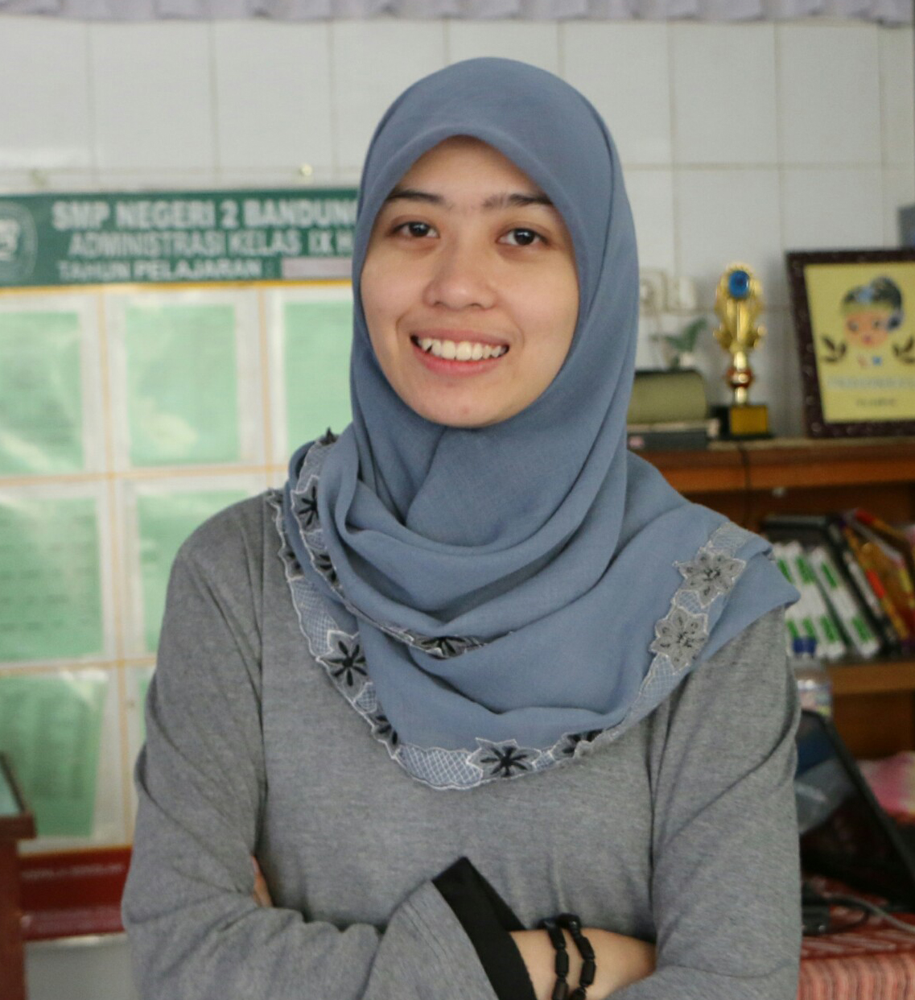

-
Founder CouncilICT-Club SMPN 2 Bandung2009 - PRESENT
- Founded ICT-Club with friends. ICT-Club is an extracurricular in SMP Negeri 2 Bandung for students whose eyes in IT.
- Developed the core implementation of the system by utilizing some administration application for the extracurricular.
- Implemented the program with the help of a online source for discussion in weekly meets.
Technologies: Microsoft Office, HTML -
Lecturer AssistantUniversitas Pendidikan Indonesia2016 - now
- Create modul and the source code for students in Pengantar Teknologi Informasi's class to learn.
- Create assignments and excercises for students in Pengantar Teknologi Informasi's class to learn.
Technologies: Pascal, Free Pascal

Siti Bati'ah Balqis
Bandung, Indonesia
Nov 16, 2016
Balqis now study in Department of Computer Science Education, Universitas Pendidikan Indonesia and takes speciality in computer science.
Portfolio
-
ICT-Club SMPN 2 Bandung
Microsoft, HTML, CSS
Universitas Pendidikan Indonesia
-
Makers Institute
C#, ASP.NET, HTML and CSS, Javascript, jQuery
C, C#, Visual Studio, HTML5, CodeIgniter
Experience
- C, 3 years
- C#, 1 year
- PHP, 2 years
- Visual Studio, 1 year
- CodeIgniter, 1 year
- JavaScript, 3 days
Availability
Part-time
Preferred Environment
Visual Studio, CodeIgniter
Best Quote...
...I've heard and till now still be my best motivation is "Your best enemey is yourself".
Employment
Experience
-
ICT-Club SMPN 2 Bandunghttps://www.facebook.com/ict.smpn2bdg/
ICT-Club an extracurricular in SMP Negeri 2 Bandung for SMPN 2 Bandung students whose eyes in IT. It use a simple system I invented in Word and Excel from Microsoft Office for its daily reports.
-
Universitas Pendidikan Indonesia
I'am one of the lecturer assistant for teaching Pascal programming. In the class the students learn about Pascal from assistant team's (me and my partners) source code.
-
Universitas Pendidikan Indonesiahttp://cs.upi.edu/
I'am one of developer-to-be for the remake of Department of Computer Science Education's site specially in the back-end programming. For now the site is like this.
-
Universitas Pendidikan Indonesia
As my final project of Internet Programming class, i've created an electronic commerce for Properties (Villa and Houses) with CodeIgniter.
Skills
-
LanguagesPascal, C, C++, C#, SQL, Java, PHP
-
FrameworksBootstrap, CodeIgniter
-
ToolsGit, Visual Studio 2010, Visual Studio 2015, Cisco Packet Tracer
-
ParadigmsObject-oriented Programming (OOP), Entity-relashionship Diagrams
-
PlatformsWindows
-
StorageRelational databases, MySQL, Oracle
Education
-
S.Kom, bachelor degree in Computer ScienceUniversitas Pendidikan Indonesia2014 - now
-
Senior High School StudentSMA PGII 1 Bandung2011 - 2014
-
Junior High School StudentSMP Negeri 2 Bandung2008 - 2011